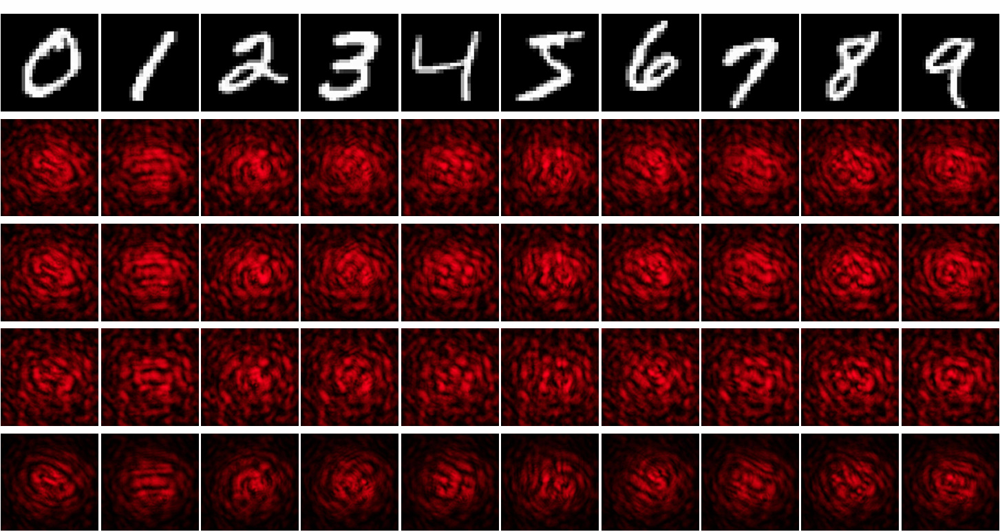
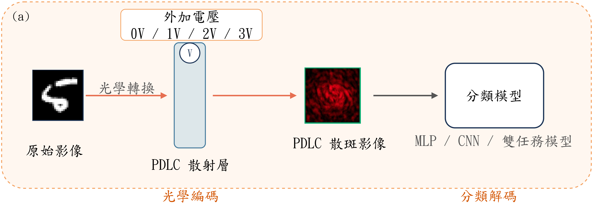
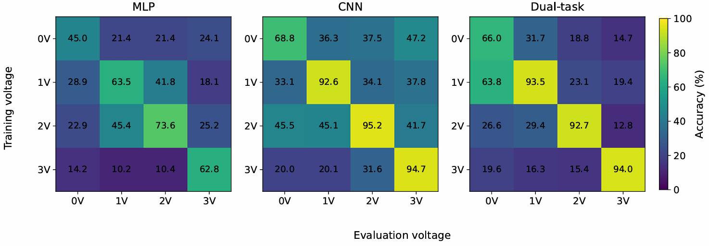
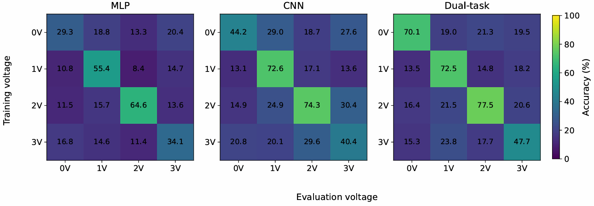
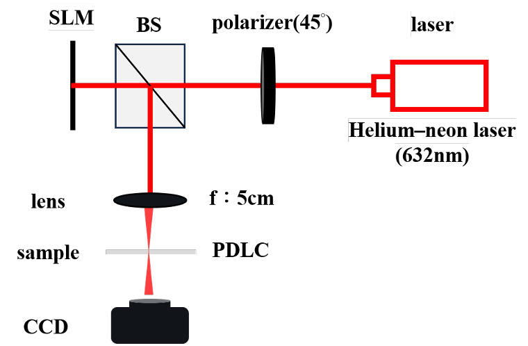

Speckle Image Classification Across Voltage Conditions
Trained and evaluated neural network classifiers on speckle images from a voltage-tunable PDLC optical system.
The Problem
An image scatters through the optical system and becomes a speckle pattern with no visible structure. The model predicts the original class directly from that speckle pattern.

Why PDLC
PDLC gives a voltage-controlled scattering condition. That makes voltage a testable variable for how classification results change across physical settings.
The System

Experimental Design
| Datasets | Fashion-MNIST, MNIST |
|---|---|
| Voltage | 0V / 1V / 2V / 3V |
| Models | MLP / CNN / Classification + Reconstruction (dual-task) |
| Seeds | 42 / 123 / 999 |
| Evaluation | Matched-voltage accuracy, 4×4 cross-voltage matrix, validation-test gap |
| Dataset size | 11,000 speckle images per voltage per dataset (10,000 train / 1,000 test), 200×200 grayscale |
Main Results

- CNN and the dual-task model reached higher matched-voltage accuracy than MLP under several conditions.
- Accuracy varied across voltage conditions and datasets, not uniformly.
- Validation results and independently acquired test results sometimes differed substantially.
One Interesting Observation
1V trained, tested at 0V (MNIST, dual-task model)
Same pattern appeared across all three random seeds.
How I Investigated It
Check implementation
Verified file paths, voltage labels, and checkpoints.
Repeat experiment
Tested three random seeds.
Plan next validation
Feature analysis and direct optical measurements planned as follow-up.
What I Contributed
- Built the pipeline: connected optical acquisition, preprocessing, model training, and evaluation.
- Designed the evaluation: matched-voltage and 4×4 cross-voltage testing across four conditions.
- Compared models: MLP, CNN, and classification + reconstruction.
- Checked reproducibility: repeated key experiments with three random seeds.
- Investigated anomalies: verified the 1V-to-0V result before drawing conclusions.
Technical details
PDLC material
Polymer-dispersed liquid crystal cell. Scattering strength set by applied voltage, 0V to 3V.
Model architecture
MLP: fully connected layers on the flattened speckle image. CNN: convolutional layers on the 200×200 speckle image. Dual-task: shared encoder, one head for classification, one head for image reconstruction.
Loss functions
Classification: cross-entropy. Reconstruction: mean squared error. The dual-task model trains on a weighted sum of both, with the reconstruction term weighted lower than the classification term.
Training
Adam optimizer. Early stopping on validation loss to avoid overfitting to one acquisition session.
Validation vs. test
Validation accuracy comes from a held-out split of the training-session data. Test accuracy comes from an independently acquired session at the same voltage. The gap between the two is reported alongside accuracy.
Full cross-voltage results

Optical setup

跨電壓條件的散斑影像分類
訓練並評估神經網路模型，對電壓可調的 PDLC 光學系統產生的散斑影像進行分類。
問題是什麼
圖片經過光學系統散射後，變成一張肉眼看不出結構的散斑影像。模型直接從這張散斑影像預測原始類別。
為什麼用 PDLC
PDLC 提供一個電壓可調的散射條件。這讓電壓成為一個可測試的變因，用來看分類結果在不同物理條件下會怎麼變化。
系統怎麼運作
實驗設計
| 資料集 | Fashion-MNIST、MNIST |
|---|---|
| 電壓 | 0V / 1V / 2V / 3V |
| 模型 | MLP / CNN / 分類＋重建（雙任務） |
| 種子 | 42 / 123 / 999 |
| 評估方式 | 同電壓準確率、4×4 跨電壓矩陣、驗證與測試差距 |
| 資料規模 | 每個資料集每個電壓 11,000 張散斑影像（訓練 10,000／測試 1,000），200×200 灰階 |
主要結果
- CNN 與雙任務模型在多數同電壓條件下，準確率高於 MLP。
- 準確率隨電壓條件與資料集變動，不是均勻一致的。
- 驗證結果與獨立取得的測試結果，有時候差距不小。
一個有意思的觀察
訓練於 1V、測試於 0V（MNIST，雙任務模型）
三組隨機種子都出現同樣的規律。
怎麼排查
確認實作
檢查檔案路徑、電壓標籤、checkpoint。
重複實驗
用三組隨機種子重新測試。
規劃下一步驗證
特徵分析與直接光學量測列為後續工作。
我做了什麼
- 建置流程：串接光學擷取、前處理、模型訓練、評估。
- 設計評估方式：同電壓與 4×4 跨電壓測試，涵蓋四個電壓條件。
- 比較模型：MLP、CNN、分類＋重建。
- 檢查可重現性：用三組隨機種子重複關鍵實驗。
- 排查異常：在下結論前先驗證 1V→0V 的結果。
技術細節
PDLC 材料
聚合物分散液晶元件，散射強度由外加電壓控制，範圍 0V 到 3V。
模型架構
MLP 用全連接層處理攤平後的散斑影像；CNN 用卷積層處理 200×200 散斑影像；雙任務模型共用一個編碼器，分成分類與影像重建兩個輸出頭。
損失函數
分類用 cross-entropy，重建用 MSE。雙任務模型訓練時把兩者加權相加，重建項的權重低於分類項。
訓練設定
使用 Adam optimizer，依驗證損失做 early stopping，避免模型過度配適單一次資料擷取的結果。
驗證與測試差距
驗證準確率來自訓練資料同一次擷取中切出的資料；測試準確率來自同電壓下另一次獨立擷取的資料。兩者的差距會跟準確率一起列出。